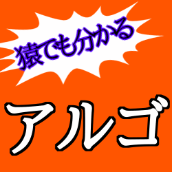

アルゴの遊び方

概要
「アルゴ」は、黒白それぞれ0から11までの数字カードを使用するゲームです。各プレイヤーは配られた手札を小さい順に左から並べて伏せて持ちます。
自分のターンでは山札からカードを1枚引き、他のプレイヤーの伏せられた手札の数字を予想します。予想が当たればそのカードを公開させ、さらに予想を続けることができます。
予想が外れた場合は、山札から引いたばかりのカードを公開してターン終了です。
ゲームは、全ての手札が公開されたプレイヤーから順に脱落し、最後まで手札が公開されずに残ったプレイヤーがそのラウンドの勝者となります。
ゲームの準備
① プレイヤーの決定：はじめに、最初のプレイヤーを決めます。
② カードの配布：各プレイヤーに以下の枚数のカードを配ります。
・2人プレイ：各6枚
・3人プレイ：各5枚
・4人プレイ：各4枚
基本ルール
○カード：カードは黒と白の2色があり、それぞれ「0」から「11」までの数字が書かれています（計24枚）。
○配置：手持ちのカードは、左から小さい順に並べて表が見えないように置きます。
※黒0→白0→黒1→白1→…のように。
○敗北条件：後述の「失格となる行為」をした場合、手持ちのカード全てを公開して、ゲームから抜けます。
手順
手番のプレイヤーは順に以下の手順を行います。
① カードを引く
② カードの数字の予想
③ カードを引く
① カードを引く